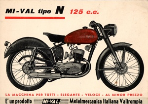
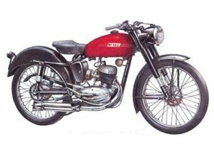
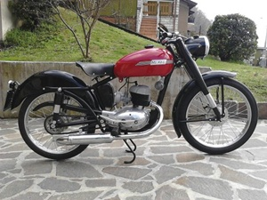

Cliccare sulle immagini per ingrandirle

MODELLO 125 N/55

|
Cliccare sulle immagini per ingrandirle |
 |
|
SCHEDA TECNICA MOTORE: Monocilindrico 2 tempi, alesaggio e corsa 52 x 58 mm, cilindrata effettiva 123 cc. Potenza effettiva 5 CV a 5200 giri, rapporto di compressione 1÷6,5 Velocità massima 85 km/h Carburatore Dell'Orto UB 20 BS Accensione a volano magnete Cambio a 3 rapporti, trasmissione primaria e secondaria a catena Frizione in bagno d'olio a dischi multipli TELAIO A culla singola Forcella anteriore telescopica teleidraulica Sospensione posteriore a forcellone oscillante con ammortizzatore idraulico Ruota anteriore: 2,50 x 19 Ruota posteriore: 2,50 x 19 Capacità serbatoio 16 litri Potenza impianto elettrico 28 W Consumo norme CUNA 2,38 litri/100 km Candela Marelli CW 225 AT |
Le moto dei visitatori

|